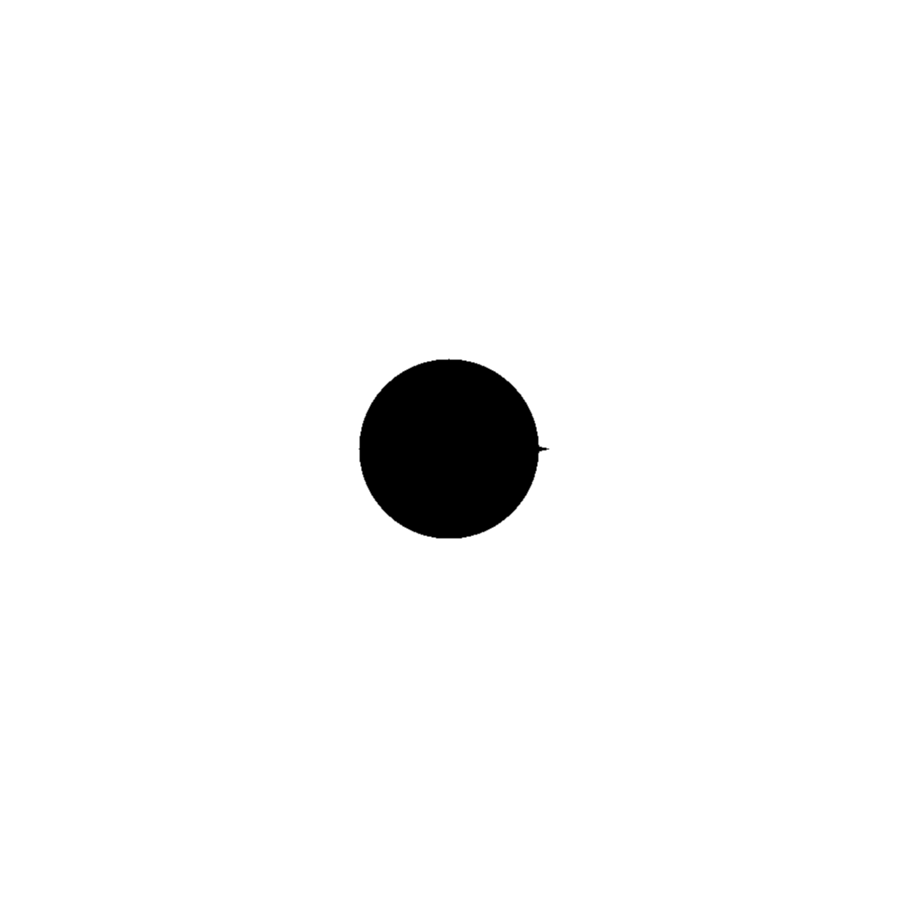

Run of com.github.skac112.klee.painters.Painter2 painter
Time: 22-12-01_02:28:55Git hash: 9c70244
Painter parameters
- frontDecay: 24.70720683867377
- to: Point(0.15,0.0)
- sideDecay: 718.1126134212101
- from: Point(0.12,0.0)
- backDecay: 123.53603419336885
Render parameters
- X range: <-0.5; 0.5>
- Y range: <-0.5; 0.5>
- nx: 1000, ny: 1000
